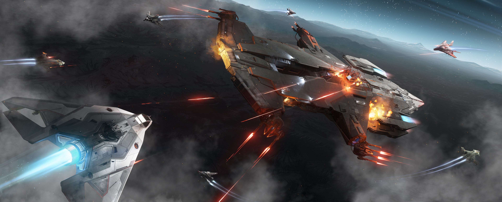

TEBRIG
The Terra Brigade
The Terra Brigade
TEBRIG, also known as the Terra Brigade, is dedicated to the protection of Terra and its inhabitants later expanding into the mercenary business. Founded shortly after the discovery of Terra, TEBRIG is made up of former members of the TDC, Terra Defense Coalition, who saw the need to unify and streamline their efforts in the face of growing threats from pirate gangs. With a focus on unity and efficiency, TEBRIG is equipped with a formidable fleet of ships and a highly trained crew, ready to defend Terra and take on any job that they are hired for no matter the difficulty. Despite its many challenges, TEBRIG remains steadfast in its mission to protect and serve, standing as a symbol of hope and determination in the face of adversity.

The TEBRIG fleet is comprised of a wide range of ships, including frigates, destroyers, and capital carriers. Each ship is equipped with state-of-the-art weapons and crewed by our finest officers, allowing TEBRIG to effectively defend Terra against any threat and provide our clients with the best service possible. The fleet is constantly expanding and improving, ensuring that TEBRIG is always prepared.
The TEBRIG chain of command is organized into three main divisions: Command, Operations, and Logistics. Within each division, there are several specialized units, each with its own specific responsibilities. This structure allows for efficient decision-making and quick response times in any situation. Whether it's intelligence gathering, tactical operations, or logistic support, the TEBRIG command structure is made to be effective and efficient so we can defend Terra and provide our clients with swift and great service.